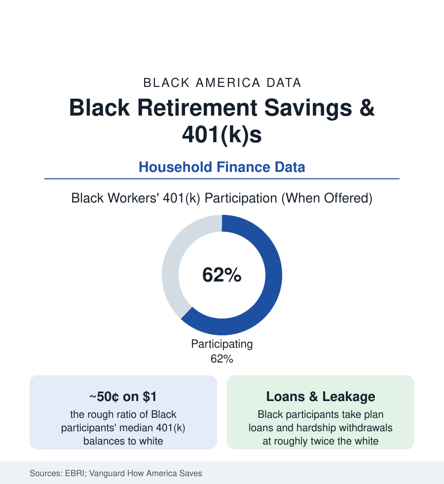

Black Census
Black Retirement Savings: Participating at the Same Rate, Accumulating Half
Black workers join 401(k) plans at rates close to white workers — then accumulate roughly half the balance. The leakage, loan, and contribution data behind the gap.

The retirement account is the middle class's main wealth machine — and its data contain this atlas's most quietly diagnostic finding: offered a 401(k), Black workers sign up at rates within a few points of white workers in the recordkeeper data; a working lifetime later, the median Black participant's balance stands at roughly half the white median. The gap is not made at the enrollment desk. It is made in the years after — in contribution rates set against tighter budgets, in loans and hardship withdrawals taken at twice the rate, in job changes cashed out. This article reads the accumulation file.
Participation, Contributions, and the Match
The EBRI and Vanguard participant universes (tens of millions of accounts — the deepest microdata in household finance) draw the layers: eligibility first (the offer itself — service-sector and part-time schedules, where Black workers concentrate, carry the thinnest plan coverage, the access gap before everything); participation among the eligible running close by race in the auto-enrollment era — auto-enrollment's documented effect being the great gap-closer of the modern plan, equalizing sign-up across demographics wherever employers adopt it; then deferral rates, where the gradient opens: Black participants contribute a modestly smaller share of pay on average in the recordkeeper data, against household budgets carrying the family financial support obligations the surveys document (the 'Black tax' of inter-household transfers in the family file — retirement dollars competing with kin support in real time). The employer match's capture follows the deferral line: participants contributing below the match ceiling leave the plan's only free money unclaimed, disproportionately the lower-paid of every race — the tier where Black participants concentrate by the earnings file's arithmetic.
Leakage: Loans, Hardships, and the Cash-Out
The balance gap's engine room is leakage — money leaving the account before retirement — and its data are unambiguous: Black participants hold plan loans at roughly twice the white rate in the Vanguard and industry records, take hardship withdrawals at elevated rates, and — the largest single leak — cash out small balances at job separation at the highest rates of any group in the EBRI tracking (the separated worker facing a $2,000 balance, a new job's waiting period, and a household emergency rationally spends the account the system made spendable). Each leak is individually legible: the loan against a medical bill the health file priced, the hardship withdrawal against the eviction the housing file counts, the cash-out against the income gaps of the unemployment file (Black unemployment's longer durations draining the bridge accounts). Compounded across a career of more frequent separations (the job-tenure data run shorter for Black workers) and the leakage tax — penalties, taxes, and the lost compounding of the market's best decades — the flows reconcile the stocks: participate equally, accumulate half. The policy responses in the current record map to each leak with unusual precision: auto-portability systems for small balances (the industry consortium now moving stranded accounts automatically), the SECURE acts' emergency-savings sidecars, and the state auto-IRA programs covering the uncovered tier (whose enrollment data show Black workers among their heaviest users).
The Other Legs: Pensions, IRAs, and Social Security's Weight
The account data sit inside the retirement system's full architecture, where the Black profile differs by leg: the defined-benefit pension (the public sector's remaining promise — Black retirees' pension coverage from the government-workforce file runs the strongest of any group, the public pension as the Black middle class's retirement bedrock); the IRA tier (ownership and balances in the SCF showing the widest gaps of the system — the self-directed account presuming the surplus and the advisory access the income file rations); and Social Security itself, whose progressive formula makes it the system's most equal leg and — by the arithmetic of the others' gaps — the largest share of retirement income for Black retirees in the SSA's beneficiary data. The composite in the SCF's retirement-wealth lines: Black households approaching retirement hold a fraction — on the order of a fifth to a quarter — of white households' retirement-account wealth, the net-worth article's steepest single component.
Reading the Retirement-Savings Data
Same enrollment desk, same plan document, half the balance: the 401(k) data are the wealth gap photographed mid-formation, with the leaks and deferrals and separations itemized in the recordkeeper's own ledgers. Nothing in the file suggests the machine is refused. Everything in it shows the machine being drained by the emergencies the other files count — and the fixes that work (auto-enrollment's proof above all) share one design: they made the right thing the default, and let the household's real life stop being the obstacle.
More in Black Census
The Black Population of the United States: Size, Definitions, and Distribution
The Black population of the United States totals 52.8 million — 15.4 percent of the nation. How the Census Bureau defines and counts the population, and where it lives.
Black Median Household Income in the United States
Black median household income stands at $56,490 in the Census Bureau's annual income report — how the figure is measured, how it compares, and what drives it.
The Black Poverty Rate: Levels, Children, and the Long Trend
The official Black poverty rate is 17.1 percent — against 11.1 percent nationally and 7.7 percent for non-Hispanic White Americans. How poverty is measured and what the data show.
Source: Employee Benefit Research Institute; Vanguard 'How America Saves' participant data; Federal Reserve Survey of Consumer Finances; AARP and TIAA Institute retirement research.